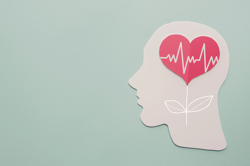
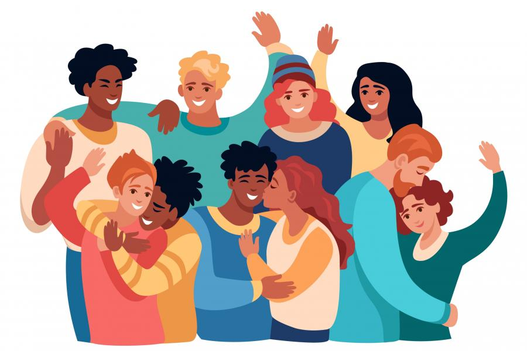

Objetivo
El objetivo principal de la página es ayudar a prevenir o a superar situaciones de riesgo que pueden pasar en la vida. Solo identificando estas situaciones es como podemos prevenirlas, reducir o nitigar los riesgos que pueden afectar negativamente. Por lo que proporcionamos una base estratégica y covincente para tomar buenas desiciones ante cada tipo de riesgo.

Salud mental
Queremos recordarte que, ante un estado de angustia, depresión o ansiedad, tu mejor aliado será siempre un buen profesional de la salud mental que pueda guiarte y hacerte ver las cosas con más claridad

Este es un tema de suma importancia, puesto que según la OMS , el 50% de los transtornos mentales en adolescentes aparece desde los 14 años. Es importante preservar la salud mental, ya que está relacionada con la salud física y puede causar hasta la muerte si no es atendido debidamente.
Según las cifras, en el Perú, según estimaciones del Ministerio de Salud, dos de cada 10 peruanos (20%) padecen de algún trastorno mental. Por ejemplo:
Transtornos de salud mental anual = 13,5%
Ansiedad = 7,9%
Trastorno de contra de impulso = 3,5 %
Uso de sustancias = 4,6%
Trastorno de estado de ánimo = 3,5%

¡Mejoremos juntos nuestra salud mental!
-Realizar actividad física, para reducir el nivel de actividad fisiológica que se asocia al estrés, la ansiedad o la ira.
-Dormir nuestras 8 horas, esto reduce la probabilidad de que aparezcan algunos problemas físicos y psicológicos.
-Mantener una dieta sana, para proteger la salud de nuestro cerebro.
Emociones y sentimientos
Es durante estas edades cuando forjamos nuestro carácter, muchas veces a base de cometer errores. Es por ello, que es importante saber que las emociones y sentimientos, tienen una gran importancia en la adolescencia, ya que el ser conscientes de nuestras emociones, nos ayudará a hablar claramente sobre nuestros sentimientos.
Diferencias
1. La emoción es una respuesta biológica, el sentimientoes un respuesta psicológica ante la emoción.
2. La emocion es física y los sentimientos mentales.
3. La emoción es instintiva, mientras que el sentimiento subconciente.
4. Las emociones son cortas mientras los sentimientos prolongados.

Características:
Inteligencia emocional:
La inteligencia emocional alta te ayuda a :
1. Conectar con otras personas.
2. Forjar relaciones empáticas.
3. Comunicar de manera efectiva.
4. Resolver conflictos.
5. Expresar tus sentimientos.
Elementos de la inteligencia emocional:
Goleman definio 5 componentes de la inteligencia emocional :
1. La Autoconciencia Emocional.
2. La Autorregulación Emocional.
3. La Motivación.
4. La Empatía.
5. La Habilidades Sociales.
Cambios emocionales en la adolescencia:
Muy aparte de los cambios corporales, a los adolescentes les aquejan muchos cambios que, en algunos casos, pueden ser muy conflictivos. Para tomar en cuenta:
 1. Buscan su independencia .
1. Buscan su independencia .
2. Se vuelven más susceptibles o sensibles.
3. Buscan la aprobación de terceros.
4. Buscan la autonomía.
¡Reconoce tus emociones y logra un control sobre ellas!
-Conocerse para poder comprendernos.
-Evitar el exceso de autocrítica y exigencia.
- Fijarse metas y objetivos, sueña en grande actúa en pequeño.
Adolescencia y Adicciones
Muchas adiciones son adquiridas en dicha etapa, porque los jóvenes son más vulnerables ante estas, ya que les es más fácil ser influenciados por terceros que le incitan a caer en las diversas adicciones que existen. Además, causan una dependencia o necesidad hacia una sustancia, actividad o relación.
¿Qué adicciones son las más comunes?:

Es un momento en el que hay que prestar especial atención ante señales de alerta y saber distinguir entre las adicciones más comunes:
-La marihuana, droga ilegal preferida por los jóvenes y usuarios.
-La cocaína, estimulante del sistema nervios.
-El alcohol, depresor del Sistema Nervioso Central.
-Calmantes, relajantes y somníferos.
- La ansiedad por permanecer conectados a las redes sociales.

¿Cuáles son las causas de la adicción?:
-Experiencias traumáticas
-Enfermedades mentales
-Ambientes pocas estimulantes
-Genéticas
¿Cuáles son las consecuencias de la adicción?:
-Falta de coordinación física
-Taquicardia
-Depresión
-Fallas respiratorias
-Trae problemas a la salud
-Te aísla de la gente
Si en caso te sientes que te estas empezando a sumergir en el mar de las adiciones, te brindamos algunos factores que pueden ayudarte a prevenir las y a salir de ellas:
-Estar en un lugar sobre se fomenten cosas buenas
-Aceptar y cumplir nuestras responsabilidades en casa
-Aprender a expresar nuestros sentimientos
-Fortalecer la autoestima
Salir de ellas:
-Tener poder de decisión
-Buscar ayuda profesional
-Buscar apoyo de seres queridos
-Aceptar, reconocer y ser consiente
fuentes:https://andina.pe/agencia/noticia-consumo-drogas-adolescentes-se-incrementa-advierte-hospital-loayza-876997.aspx
Sexualidad Responsable
¿QUE ES LA SEXUALIDAD?:
Es el conjunto de características físicas y psicológicas propias de cada sexo. Ademas, están relacioadas con nuestro comportamiento sexual.

Componentes:
-Sexo biológico, características nuestras
-Identidad sexual, sexo masculino o femenino
-Rol de género, comportamiento que asumimos
-Orientación sexual, atracción sexual

Consecuencias de una sexualidad irresponsable:
-Embarazos a corta edad
-No se disfruta la vida como se debe
-Riesgo de contraer enfermedades de trasmisión sexual
-Abortos
¿Cómo tener una sexualidad sana?:*
-Asumiendo responsabilidades
-No ser indiferentes o ignorantes ante información de este tipo
-No creer en todos los dicho antiquísimos
-Hablar de ella con personas mayores y con experiencia